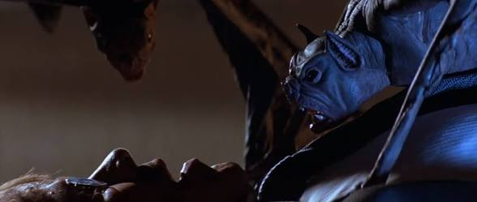

🦇 🩸 🔬 BATS (1999) — CERTIFIED MGC G-7

🏛 MGC LOWER COURT OF APPEALS
- ASSET TITLE: Bats (1999) – The Genetically Modified Flying-Fox Planchet
- OFFICIAL REGISTRY GRADE: Certified MGC G-7 (Good / Heavily Circulated Creature Alloy)
- LOWER COURT JURISDICTION: Judge Tina (Chief of Cult Classics)
- CASE FILE: #099
📜 THE FORENSIC NARRATIVE BREAKDOWN & RECOVERY
Tina walks up 👢👢 to the cold steel bench, tosses an empty coffee cup into the trash can 🗑, and dials her 5x magnifying lens onto this late-90s creature-feature specimen.
1. Recycled Creature-Feature Die & Plot-Logic Leaks
- Under our strict 5x numismatic magnifying lens, Louis Morneau’s 1999 eco-horror flick exhibits heavy circulation wear straight out of the 1950s atomic-monster playbook. The narrative blueprint revolves around a government scientist (Bob Gunton) who genetically engineers omnivorous, hyper-intelligent flying foxes that escape into the small Texas town of Gallup. While the setup carries solid drive-in nostalgia, the script leaks engine oil through glaring structural cracks—most notably the baffling decision to battle nocturnal, radar-guided predators exclusively in pitch-black caves and abandoned mines instead of waiting for broad daylight.
2. Late-1990s CGI Corrosion vs. Practical Puppet Metallurgy
- Inspecting the visual surface under high magnification reveals a split alloy. Whenever the production relies on early, rubbery 1999 CGI swarms, the edges blur and show severe digital oxidation that dates the reel instantly. However, the planchet avoids dropping into the lower G-4 junk drawer thanks to its old-school practical mechanics. The physical animatronic bat puppets, wire-work swoops, and practical blood squibs deliver genuine, tactile creature-feature grit that holds its strike far better than the computer-generated filler.
3. Dependable Lead Cast & Pacing Velocity
- What elevates this specimen to the top of the G-7 Good register is the sheer professionalism of its lead metallurgy. Lou Diamond Phillips plays Sheriff Emmett Kimsey with grounded, blue-collar authority, pairing smoothly with Dina Meyer as bat expert Dr. Sheila Casper and Leon as her wisecracking assistant Jimmy. Even when the dialogue turns tinny and the third-act military bomb countdown relies on tired thriller clichés, Morneau keeps the pacing brisk and the action relentless enough to satisfy midnight-movie collectors.
⚖️ THE CHIEF’S FINAL DECREE
Tina grabs her heavy 12-inch crescent wrench and slams it onto the steel desk with a deafening metallic ring!
- “The CGI swarms show plenty of 1999 rust, and nobody in Texas seems to know how a wristwatch works—but solid practical puppets and a locked-in cast keep this creature feature flying straight at the top of the Good ledger!”
🔧💥 🦇 Case Closed. Certified MGC G-7.

• © 2026 MOVIE GRADING CONSENSUS. All Sovereign Rights Reserved.